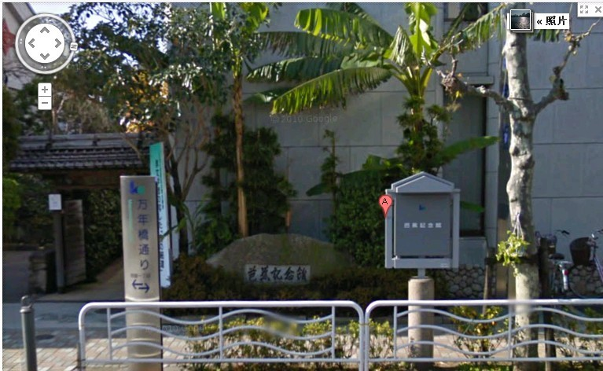

大角通过世锦赛日本选拔进AT
首页
五子棋新闻
#1 大角通过世锦赛日本选拔进AT 作者：小红眼镜 发表时间：2013-3-26 0:08:42
第8届全日本连珠锦标赛(珠王战)暨第13届世界连珠锦标赛日本选拔赛于上周末举行，大角友希九段5胜1和夺得珠王位同时取得进军爱沙尼亚第13届世锦赛决赛(AT)的资格。中村茂名人同样5胜1和小分稍逊获得亚军，神谷俊介初段发挥出色取得3胜2和的好成绩名列第三位，中村和神谷获得世锦资格赛(QT)名额。冈部宽八段、黄濑胜巳四段，饭尾义弘八段具有QT个人参加资格。
共有20位棋手参加了本届珠王战。
冠军 大角友希九段 ５胜１和
亚军 中村 茂名人 ５胜１和
季军 神谷俊介初段 ３胜１负２和
４位 冈部 宽八段 ３胜２负１和
５位 矶部泰山九段 ３胜２负１分
６位 三森政男九段 ３胜２负１分
７位 长尾纪昭六段 ３胜２负１分
８位 佐藤清富七段 ３胜２负１分
９位 久富隆洋七段 ３胜３负
10位 饭尾义弘八段 ３胜３负
11位 石谷信一九段 ３胜３负
12位 卵 坊六段 ３胜３负
以下略。
（励精）
［ 鱼岛岛主 于 2013-3-26 15:54:41 时花20金币送鲜花一朵］
［ 鱼岛岛主 于 2013-3-26 15:54:41 时花20金币送鲜花一朵］
［ 鱼岛岛主 于 2013-3-26 15:54:41 时花20金币送鲜花一朵］
#2 Re:大角通过世锦赛日本选拔进AT 作者：掌棋宣传员 发表时间：2013-3-26 18:30:33
QT多了个抢名额的、、、
#3 Re:掌棋宣传员【==Re:大角通过世锦赛日本选拔进AT==】 作者：无尽 发表时间：2013-3-26 18:39:24
有资格而已，不一定去呢
#4 Re:大角通过世锦赛日本选拔进AT 作者：掌棋宣传员 发表时间：2013-3-26 19:30:01

#5 Re:大角通过世锦赛日本选拔进AT 作者：天逸W西西 发表时间：2013-3-27 0:11:45
中村 是不是进A组预选了？》
#6 Re:大角通过世锦赛日本选拔进AT 作者：小小亦默 发表时间：2013-3-27 21:25:35
回个帖子 仅仅是这样